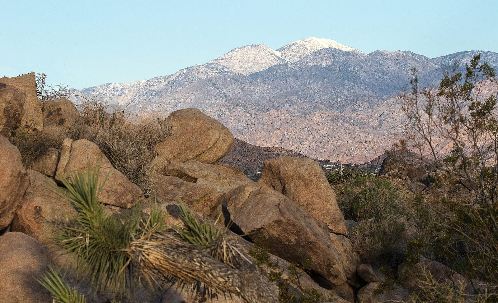

Climb Southern California
Browse classic SoCal summits, from the Six-Pack of Peaks to San Diego favorites, and keep a log of every one you finish.
Browse trailsThe SoCal Six-Pack of Peaks
Six summits, each over 5,000 feet, spread across three mountain ranges: Mt. Wilson, Cucamonga Peak, Mt. Baldy, San Bernardino Peak, San Jacinto Peak and San Gorgonio Mountain. Finish all six and you have earned the region's best-known hiking bragging rights. Create a free account to track your progress.
All trails
Stats are approximate; check current conditions and permits before hiking.